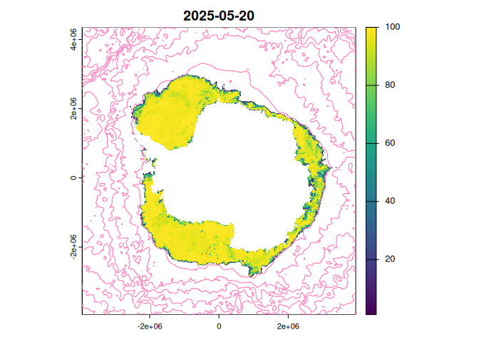

The goal of sooty is to provide access to data of relevance to Southern Ocean research.
To see what files we know about in object storage, use
library(sooty)
(files <- tibble::as_tibble(sooty_files()))
#> # A tibble: 90,965 × 7
#> date source Dataset Bucket Key Protocol Host
#> <dttm> <chr> <chr> <chr> <chr> <chr> <chr>
#> 1 1981-09-01 00:00:00 /vsicurl/https://pro… oisst-… idea-… www.… /vsicurl http…
#> 2 1981-09-02 00:00:00 /vsicurl/https://pro… oisst-… idea-… www.… /vsicurl http…
#> 3 1981-09-03 00:00:00 /vsicurl/https://pro… oisst-… idea-… www.… /vsicurl http…
#> 4 1981-09-04 00:00:00 /vsicurl/https://pro… oisst-… idea-… www.… /vsicurl http…
#> 5 1981-09-05 00:00:00 /vsicurl/https://pro… oisst-… idea-… www.… /vsicurl http…
#> 6 1981-09-06 00:00:00 /vsicurl/https://pro… oisst-… idea-… www.… /vsicurl http…
#> 7 1981-09-07 00:00:00 /vsicurl/https://pro… oisst-… idea-… www.… /vsicurl http…
#> 8 1981-09-08 00:00:00 /vsicurl/https://pro… oisst-… idea-… www.… /vsicurl http…
#> 9 1981-09-09 00:00:00 /vsicurl/https://pro… oisst-… idea-… www.… /vsicurl http…
#> 10 1981-09-10 00:00:00 /vsicurl/https://pro… oisst-… idea-… www.… /vsicurl http…
#> # ℹ 90,955 more rowsThese are all directly useable source identifiers that a GDAL-enabled package can read. (See examples below).
For now we only have manual handling for dates, such as:
library(terra)
#> terra 1.8.42
file <- files$source[which.max(files$date) ]
print(file)
#> [1] "/vsicurl/https://projects.pawsey.org.au/idea-sealevel-glo-phy-l4-nrt-008-046/data.marine.copernicus.eu/SEALEVEL_GLO_PHY_L4_NRT_008_046/cmems_obs-sl_glo_phy-ssh_nrt_allsat-l4-duacs-0.125deg_P1D_202411/2025/05/nrt_global_allsat_phy_l4_20250506_20250506.nc"
rast(file)
#> Warning: X axis unit (degrees_east) is different from Y axis unit
#> (degrees_north). SRS will ignore axis unit and be likely wrong. (GDAL error 1)
#> Warning: X axis unit (degrees_east) is different from Y axis unit
#> (degrees_north). SRS will ignore axis unit and be likely wrong. (GDAL error 1)
#> Warning: X axis unit (degrees_east) is different from Y axis unit
#> (degrees_north). SRS will ignore axis unit and be likely wrong. (GDAL error 1)
#> Warning: X axis unit (degrees_east) is different from Y axis unit
#> (degrees_north). SRS will ignore axis unit and be likely wrong. (GDAL error 1)
#> Warning: X axis unit (degrees_east) is different from Y axis unit
#> (degrees_north). SRS will ignore axis unit and be likely wrong. (GDAL error 1)
#> Warning: X axis unit (degrees_east) is different from Y axis unit
#> (degrees_north). SRS will ignore axis unit and be likely wrong. (GDAL error 1)
#> Warning: X axis unit (degrees_east) is different from Y axis unit
#> (degrees_north). SRS will ignore axis unit and be likely wrong. (GDAL error 1)
#> Warning: X axis unit (degrees_east) is different from Y axis unit
#> (degrees_north). SRS will ignore axis unit and be likely wrong. (GDAL error 1)
#> Warning: X axis unit (degrees_east) is different from Y axis unit
#> (degrees_north). SRS will ignore axis unit and be likely wrong. (GDAL error 1)
#> Warning: X axis unit (degrees_east) is different from Y axis unit
#> (degrees_north). SRS will ignore axis unit and be likely wrong. (GDAL error 1)
#> class : SpatRaster
#> dimensions : 1440, 2880, 10 (nrow, ncol, nlyr)
#> resolution : 0.125, 0.125 (x, y)
#> extent : -180, 180, -90, 90 (xmin, xmax, ymin, ymax)
#> coord. ref. : +proj=longlat +a=6378136.3 +rf=298.257 +no_defs
#> sources : nrt_global_allsat_phy_l4_20250506_20250506.nc:sla
#> nrt_global_allsat_phy_l4_20250506_20250506.nc:err_sla
#> nrt_global_allsat_phy_l4_20250506_20250506.nc:ugosa
#> ... and 7 more sources
#> varnames : sla (Sea level anomaly)
#> err_sla (Formal mapping error)
#> ugosa (Geostrophic velocity anomalies: zonal component)
#> ...
#> names : sla, err_sla, ugosa, err_ugosa, vgosa, err_vgosa, ...
#> unit : m, m, m/s, m/s, m/s, m/s, ...
#> time (days) : 2025-05-06The available datasets can be found from the table.
dplyr::distinct(sooty_files(), Dataset)
#> # A tibble: 8 × 1
#> Dataset
#> <chr>
#> 1 oisst-avhrr-v02r01
#> 2 SEALEVEL_GLO_PHY_L4
#> 3 NSIDC_SEAICE_PS_S25km
#> 4 NSIDC_SEAICE_PS_N25km
#> 5 antarctica-amsr2-asi-s3125-tif
#> 6 ghrsst-tif
#> 7 oisst-tif
#> 8 esacci-tifThere are data sets like the 25km resolution south polar stereographic sea ice concentration, available via the dataset identifier `:
icefiles <- sooty_files() |> dplyr::filter(Dataset == "NSIDC_SEAICE_PS_S25km")
dplyr::glimpse(icefiles)
#> Rows: 16,988
#> Columns: 7
#> $ date <dttm> 1978-10-26, 1978-10-27, 1978-10-28, 1978-10-29, 1978-10-30, …
#> $ source <chr> "/vsicurl/https://projects.pawsey.org.au/idea-10.5067-mpyg15w…
#> $ Dataset <chr> "NSIDC_SEAICE_PS_S25km", "NSIDC_SEAICE_PS_S25km", "NSIDC_SEAI…
#> $ Bucket <chr> "idea-10.5067-mpyg15waa4wx", "idea-10.5067-mpyg15waa4wx", "id…
#> $ Key <chr> "n5eil01u.ecs.nsidc.org/PM/NSIDC-0051.002/1978.10.26/NSIDC005…
#> $ Protocol <chr> "/vsicurl", "/vsicurl", "/vsicurl", "/vsicurl", "/vsicurl", "…
#> $ Host <chr> "https://projects.pawsey.org.au", "https://projects.pawsey.or…You can immediately see what range of dates is available:
range(icefiles$date)
#> [1] "1978-10-26 UTC" "2025-05-05 UTC"And, explore exactly what source files are available:
range(diff(icefiles$date)) ## there are some gaps, it's every two days to start and some are missing
#> Time differences in days
#> [1] 1 7
diff(range(icefiles$date)) ## the number of potential data days
#> Time difference of 16993 days
nrow(icefiles) ## the actual number of data days
#> [1] 16988This is a very experimental begin at replacing raadtools with a package anyone can use.
We can read from the datasets with a GDAL-ready package, such as terra. But note that we need to set a configuration first, and we need to unset it after, this is WIP.
amsrfiles <- dataset("antarctica-amsr2-asi-s3125-tif")@source
library(terra)
(r <- rast(tail(amsrfiles$source, 1)))
#> class : SpatRaster
#> dimensions : 2656, 2528, 1 (nrow, ncol, nlyr)
#> resolution : 3125, 3125 (x, y)
#> extent : -3950000, 3950000, -3950000, 4350000 (xmin, xmax, ymin, ymax)
#> coord. ref. : WGS 84 / NSIDC Sea Ice Polar Stereographic South (EPSG:3976)
#> source : asi-AMSR2-s3125-20250505-v5.4.tif
#> color table : 1
#> name : asi-AMSR2-s3125-20250505-v5.4
r[r > 100] <- NA
plot(r[[nlyr(r)]] * 1, main = format(max(icefiles$date)))
ghrsst <- dataset("ghrsst-tif")
sstfile <- ghrsst@source$source[match(max(icefiles$date), ghrsst@source$date)]
sst <- rast(sprintf("vrt://%s?ovr=4", sstfile))
ct <- as.contour(crop(sst, ext(-180, 180, -90, -40)))
plot(project(ct, crs(r)), add = TRUE, col = "hotpink")
That should be the state of the sea ice in the Southern Ocean at the latest available date, sea ice concentration from passive microwave at 3.125km resolution, by the AWI artist sea ice group.
S7 object control
We have an in-progress class for dataset handling. Create a ‘dataset()’ and set an id.
ds <- dataset()
ds@id <- "NSIDC_SEAICE_PS_S25km"
ds
#> <sooty::dataset>
#> @ id : chr "NSIDC_SEAICE_PS_S25km"
#> @ n : int 16988
#> @ mindate : POSIXct[1:1], format: "1978-10-26"
#> @ maxdate : POSIXct[1:1], format: "2025-05-05"
#> @ available_datasets: chr [1:8] "oisst-avhrr-v02r01" "SEALEVEL_GLO_PHY_L4" ...
#> @ curated : tibble [90,965 × 7] (S3: tbl_df/tbl/data.frame)
#> $ date : POSIXct[1:90965], format: "1981-09-01" "1981-09-02" ...
#> $ source : chr [1:90965] "/vsicurl/https://projects.pawsey.org.au/idea-10.7289-v5sq8xb5/www.ncei.noaa.gov/data/sea-surface-temperature-op"| __truncated__ "/vsicurl/https://projects.pawsey.org.au/idea-10.7289-v5sq8xb5/www.ncei.noaa.gov/data/sea-surface-temperature-op"| __truncated__ "/vsicurl/https://projects.pawsey.org.au/idea-10.7289-v5sq8xb5/www.ncei.noaa.gov/data/sea-surface-temperature-op"| __truncated__ "/vsicurl/https://projects.pawsey.org.au/idea-10.7289-v5sq8xb5/www.ncei.noaa.gov/data/sea-surface-temperature-op"| __truncated__ ...
#> $ Dataset : chr [1:90965] "oisst-avhrr-v02r01" "oisst-avhrr-v02r01" "oisst-avhrr-v02r01" "oisst-avhrr-v02r01" ...
#> $ Bucket : chr [1:90965] "idea-10.7289-v5sq8xb5" "idea-10.7289-v5sq8xb5" "idea-10.7289-v5sq8xb5" "idea-10.7289-v5sq8xb5" ...
#> $ Key : chr [1:90965] "www.ncei.noaa.gov/data/sea-surface-temperature-optimum-interpolation/v2.1/access/avhrr/198109/oisst-avhrr-v02r01.19810901.nc" "www.ncei.noaa.gov/data/sea-surface-temperature-optimum-interpolation/v2.1/access/avhrr/198109/oisst-avhrr-v02r01.19810902.nc" "www.ncei.noaa.gov/data/sea-surface-temperature-optimum-interpolation/v2.1/access/avhrr/198109/oisst-avhrr-v02r01.19810903.nc" "www.ncei.noaa.gov/data/sea-surface-temperature-optimum-interpolation/v2.1/access/avhrr/198109/oisst-avhrr-v02r01.19810904.nc" ...
#> $ Protocol: chr [1:90965] "/vsicurl" "/vsicurl" "/vsicurl" "/vsicurl" ...
#> $ Host : chr [1:90965] "https://projects.pawsey.org.au" "https://projects.pawsey.org.au" "https://projects.pawsey.org.au" "https://projects.pawsey.org.au" ...
#> @ source : tibble [16,988 × 7] (S3: tbl_df/tbl/data.frame)
#> $ date : POSIXct[1:16988], format: "1978-10-26" "1978-10-27" ...
#> $ source : chr [1:16988] "/vsicurl/https://projects.pawsey.org.au/idea-10.5067-mpyg15waa4wx/n5eil01u.ecs.nsidc.org/PM/NSIDC-0051.002/1978"| __truncated__ "/vsicurl/https://projects.pawsey.org.au/idea-10.5067-mpyg15waa4wx/n5eil01u.ecs.nsidc.org/PM/NSIDC-0051.002/1978"| __truncated__ "/vsicurl/https://projects.pawsey.org.au/idea-10.5067-mpyg15waa4wx/n5eil01u.ecs.nsidc.org/PM/NSIDC-0051.002/1978"| __truncated__ "/vsicurl/https://projects.pawsey.org.au/idea-10.5067-mpyg15waa4wx/n5eil01u.ecs.nsidc.org/PM/NSIDC-0051.002/1978"| __truncated__ ...
#> $ Dataset : chr [1:16988] "NSIDC_SEAICE_PS_S25km" "NSIDC_SEAICE_PS_S25km" "NSIDC_SEAICE_PS_S25km" "NSIDC_SEAICE_PS_S25km" ...
#> $ Bucket : chr [1:16988] "idea-10.5067-mpyg15waa4wx" "idea-10.5067-mpyg15waa4wx" "idea-10.5067-mpyg15waa4wx" "idea-10.5067-mpyg15waa4wx" ...
#> $ Key : chr [1:16988] "n5eil01u.ecs.nsidc.org/PM/NSIDC-0051.002/1978.10.26/NSIDC0051_SEAICE_PS_S25km_19781026_v2.0.nc" "n5eil01u.ecs.nsidc.org/PM/NSIDC-0051.002/1978.10.27/NSIDC0051_SEAICE_PS_S25km_19781027_v2.0.nc" "n5eil01u.ecs.nsidc.org/PM/NSIDC-0051.002/1978.10.28/NSIDC0051_SEAICE_PS_S25km_19781028_v2.0.nc" "n5eil01u.ecs.nsidc.org/PM/NSIDC-0051.002/1978.10.29/NSIDC0051_SEAICE_PS_S25km_19781029_v2.0.nc" ...
#> $ Protocol: chr [1:16988] "/vsicurl" "/vsicurl" "/vsicurl" "/vsicurl" ...
#> $ Host : chr [1:16988] "https://projects.pawsey.org.au" "https://projects.pawsey.org.au" "https://projects.pawsey.org.au" "https://projects.pawsey.org.au" ...
ds@source
#> # A tibble: 16,988 × 7
#> date source Dataset Bucket Key Protocol Host
#> <dttm> <chr> <chr> <chr> <chr> <chr> <chr>
#> 1 1978-10-26 00:00:00 /vsicurl/https://pro… NSIDC_… idea-… n5ei… /vsicurl http…
#> 2 1978-10-27 00:00:00 /vsicurl/https://pro… NSIDC_… idea-… n5ei… /vsicurl http…
#> 3 1978-10-28 00:00:00 /vsicurl/https://pro… NSIDC_… idea-… n5ei… /vsicurl http…
#> 4 1978-10-29 00:00:00 /vsicurl/https://pro… NSIDC_… idea-… n5ei… /vsicurl http…
#> 5 1978-10-30 00:00:00 /vsicurl/https://pro… NSIDC_… idea-… n5ei… /vsicurl http…
#> 6 1978-10-31 00:00:00 /vsicurl/https://pro… NSIDC_… idea-… n5ei… /vsicurl http…
#> 7 1978-11-01 00:00:00 /vsicurl/https://pro… NSIDC_… idea-… n5ei… /vsicurl http…
#> 8 1978-11-02 00:00:00 /vsicurl/https://pro… NSIDC_… idea-… n5ei… /vsicurl http…
#> 9 1978-11-03 00:00:00 /vsicurl/https://pro… NSIDC_… idea-… n5ei… /vsicurl http…
#> 10 1978-11-04 00:00:00 /vsicurl/https://pro… NSIDC_… idea-… n5ei… /vsicurl http…
#> # ℹ 16,978 more rowsCode of Conduct
Please note that the idt project is released with a Contributor Code of Conduct. By contributing to this project, you agree to abide by its terms.